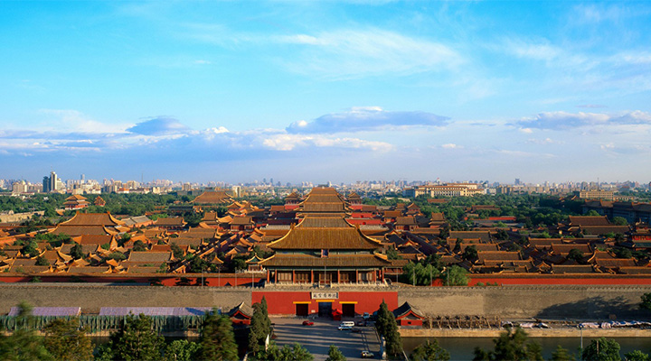

<!DOCTYPE html>
<head>
  <meta charset="utf-8">
  <title>The Palacae Museum - Unique Imperial Collections</title>
  <link rel="stylesheet" href="css/style.css">
</head>
<body>


  <script type="text/x-handlebars">
    <div class="container">
      <header class="header">
        <h1 class="logo">
          {{#link-to "index" class="homepageLinkClass"}}
            The Palace Museum
          {{/link-to}}
        </h1>
      </header>
      <nav class="n">
        {{#link-to "about" class="btn btn-primary"}}Introduction{{/link-to}}
        {{#link-to "collections" class="btn btn-primary"}}Exhibitions and Collections{{/link-to}}
        {{#link-to "notes" class="btn btn-primary"}}Comment Wall{{/link-to}}
      </nav>
      <main class="mainClass">{{outlet}}</main>
      <footer class="footerClass">
        <Medium>The Palace Museum Address: 4 Jingshan Front St, Dongcheng Qu, Beijing Shi, China, 100006,</Medium>
      </footer>
      <footer class="footerClass">
      <Medium> Phone Number: 861085007421 </Medium>
      </footer>

    </div>
  </script>


<!-- Home Page  -->

  <script type="text/x-handlebars" data-template-name="index">
    <section id="home" class="pageClass clearfix">
      <h2 class="hpHeader">Ni Hao. Welcome to The Palace Museum</h2>
      <div class="hd">
        
      </div>
      <div class="hd hm">
        Established in 1925, the Palace Museum is located in the imperial palace of the consecutive Ming (1368-1644) and Qing (1644-1911) dynasties. The magnificent architectural complex, also known as the Forbidden City, and the vast holdings of paintings, calligraphy, ceramics, and antiquities of the imperial collections make it one of the most prestigious museums in China and the world.
          <br><br>
          {{#link-to "about"}}<strong>know more &raquo;</strong>{{/link-to}}
      </div>
    </section>
  </script>


<!-- Intro Page -->

  <script type="text/x-handlebars" id="about">
    <section id="about" class="pageClass">
      <h2>Some info about the Palace Museum</h2>
      <h3 class="aText">Cherish Traditional Chinese Art</h3>
      
      <h3>Brief Introduction</h3>

      <p>
        Established in 1925, the Palace Museum is located in the imperial palace of the consecutive Ming (1368-1644) and Qing (1644-1911) dynasties. The magnificent architectural complex, also known as the Forbidden City, and the vast holdings of paintings, calligraphy, ceramics, and antiquities of the imperial collections make it one of the most prestigious museums in China and the world.
      </p>
      <p>
        In 1961, the State Council designated the former imperial residence as one of China's foremost-protected cultural heritage sites, and in 1987 it was listed as a UNESCO World Heritage site.
</p>
      <p>
        Although the Forbidden City used to be an impenetrable fortress, the imperial palace is now a public museum. The collection, displayed in gallery halls throughout the complex, is becoming increasingly more accessible with digital technologies. The Museum’s website, established in 2001, is dedicated to presenting a “Digital Palace Museum” by which the wealth of cultural heritage contained in the Forbidden City may be effectively spread worldwide.
      </p>
      <p>
        With rich collections representing the broad spectrum of 5,000 years of Chinese civilization and the 600 year history of the Forbidden City, the Palace Museum has seen many developments since its founding in 1925 and looks forward to carrying on the legacy of the past for future generations. Now, as always, the Palace Museum is committed to the preservation of national heritage and the goal of serving as a model for museums around the world.
      </p>
    </section>
  </script>


<!--Collection Page-->

    <script type="text/x-handlebars" id="components/single-collection">
      <h3>{{title}}</h3>
      
      {{yield}}
    </script>

    <script type="text/x-handlebars" id="collections">
      <section class="pageClass clearfix">
        <h2>Collections and Exhibitions</h2>
        {{#each}}
          {{#single-collection title=title image=image}}
            {{intro}}
          {{/single-collection}}
        {{/each}}
      </section>
    </script>


  <!--Post,save,edit and delete-->

  <script type="text/x-handlebars" id="notes">
    <article class="pageClass">
      <h2>Comment Wall</h2>
      {{textarea placeholder="create a new comment" value = newNote rows=10 cols=60}}
      <p class="commentBtn">
        <button {{action "newNote"}} class="btn btn-info">Save this comment</button>
      </p>
      {{#each itemController="note"}}
        <div class="comment">
        {{#if edit}}
          <p><strong>EDIT THIS NOTE...</strong></p>
          {{update-note value=copy}}
          <p class="commentBtn">
            <button {{action "saveComment"}} class="btn btn-info">Save this comment</button>
          </p>
        {{else}}
          {{copy}}
          <hr/>
          <p class="commentBtn">
            <button {{action "editComment"}} class="btn btn-info">Edit this comment</button>
            <button {{action "deleteComment"}} class="btn btn-info">Delete this comment</button>
          </p>
        {{/if}}
        </div>
      {{/each}}
    </article>
  </script>

  <script src="js/libs/jquery-1.10.2.js"></script>
  <script src="js/libs/handlebars-1.1.2.js"></script>
  <script src="js/libs/ember.min.js"></script>
  <script src="js/libs/ember-data.js"></script>
  <script src="js/libs/localstorage_adapter.js"></script>
  <script src="app.js"></script>

</body>
</html>
